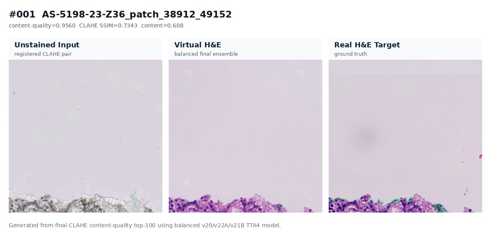
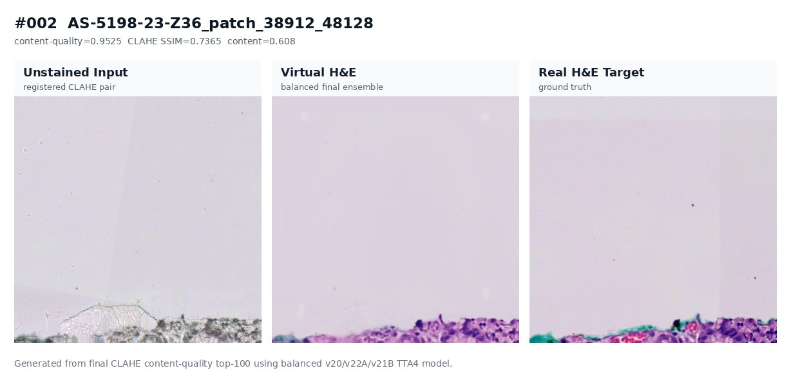
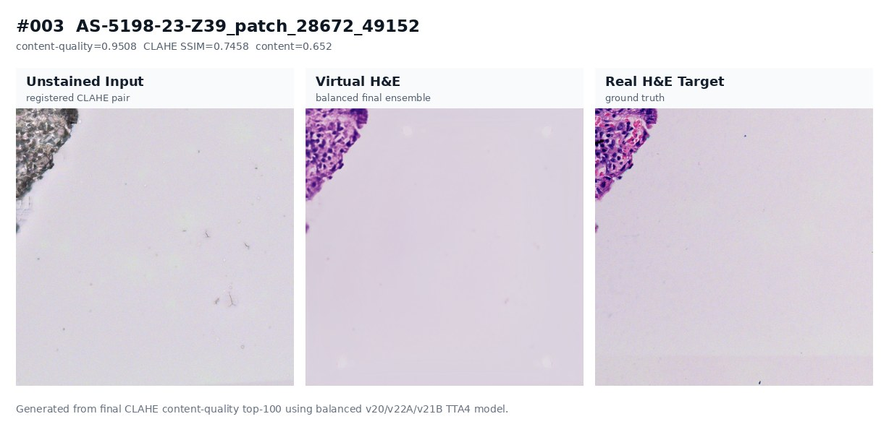
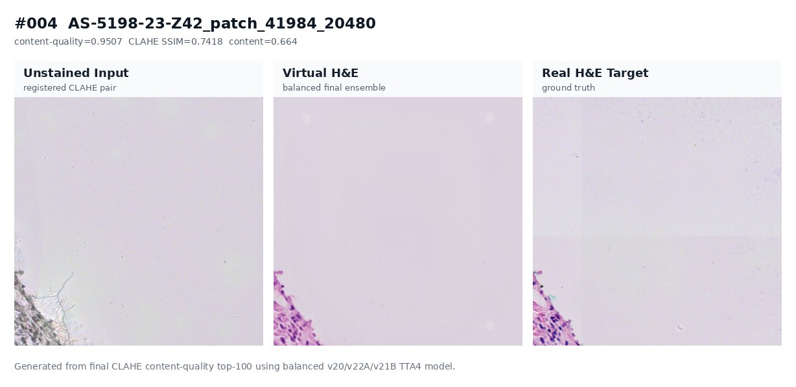
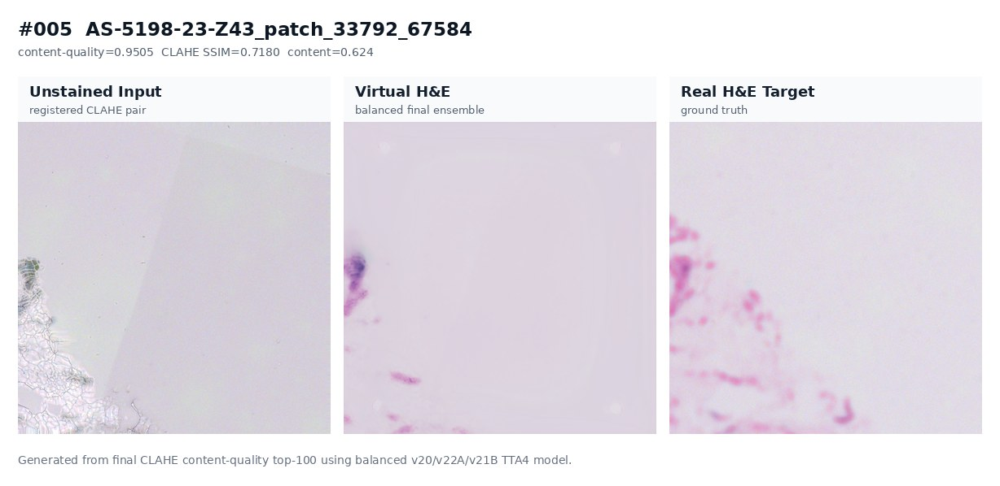
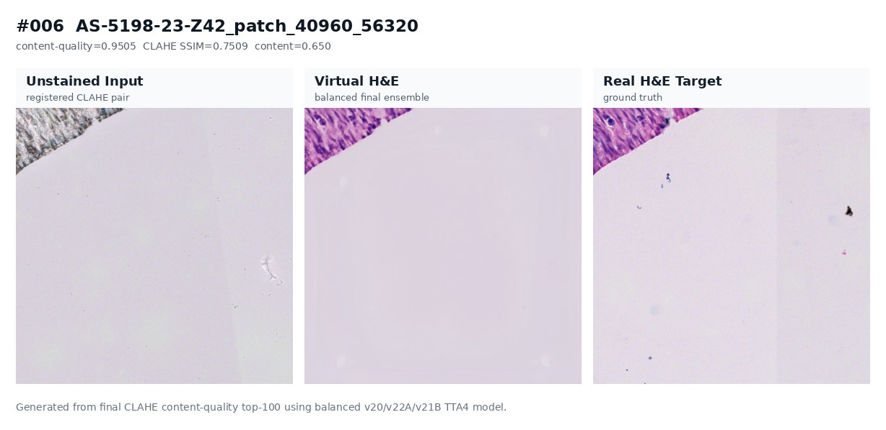
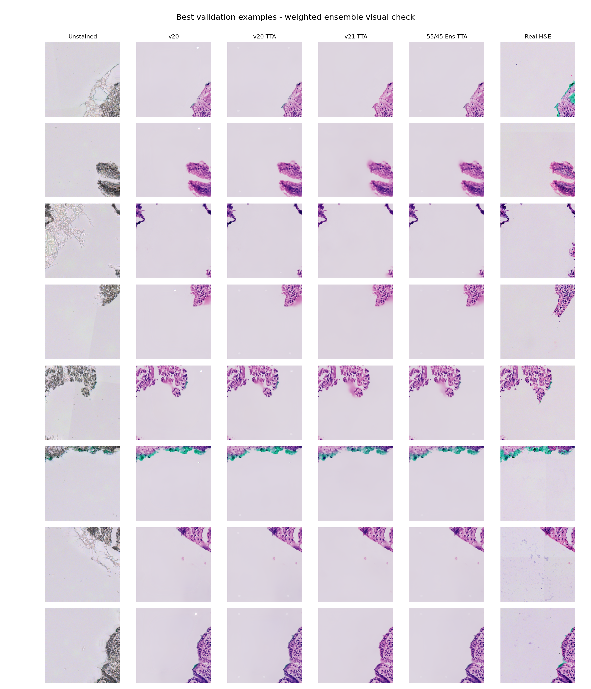

Institution: Indian Institute of Technology Hyderabad Department: Biomedical Engineering Professor: Prof. Renu John Teaching Assistant: Sarfaraz Group Members: Nishant and Arin Report Date: 2 May 2026
This report is written for a first-year college student who may not already know deep learning, histology, or medical image registration. The goal is to explain the project in simple language while still giving enough technical detail to defend the work in a review or presentation.
The project goal was to build a system that takes an unstained tissue microscopy image and predicts how the same tissue would look after H&E staining. H&E means Hematoxylin and Eosin. In normal pathology, Hematoxylin stains cell nuclei purple-blue and Eosin stains cytoplasm and extracellular tissue pink. Here, instead of physically staining the sample, we train a model to create a virtual H&E image from the unstained image.
The final best system is not one single trick. It is the result of many decisions: better image registration, better data filtering, stronger neural network backbones, simpler losses, clean validation splits, test-time augmentation, and a final ensemble. This report explains why each decision was made and why some earlier ideas were stopped.
The final project pipeline is:
Unstained image pair data
-> CLAHE-driven TV-L1 non-rigid registration
-> content-quality top-1000 training selection
-> v20/v22A/v21B model family
-> 4-flip test-time augmentation
-> weighted final ensemble
-> desktop/CLI staining app
The final recommended model mode is the balanced ensemble:
0.20 * v20_fixed TTA4
0.60 * v22A content-quality TTA4
0.20 * v21B Hibou-B content-quality TTA4
On the final fixed CLAHE validation set, this scored:
| Metric | Final Balanced Ensemble |
|---|---|
| SSIM | 0.7838 |
| PSNR | 25.16 dB |
| PCC | 0.8794 |
These numbers come from the project file logs/final_v21b_v22a_eval_summary.txt and are also recorded in best_model_manifest.json [P1, P2].
The best single model on the same CLAHE fixed validation set was v22A TTA4, with:
| Metric | v22A TTA4 |
|---|---|
| SSIM | 0.7807 |
| PSNR | 25.16 dB |
| PCC | 0.8782 |
The final ensemble only improved slightly over v22A alone, but the improvement was consistent enough to keep it as the highest-quality internal mode. For a simpler public app, v22A-only or v20-only remains easier to distribute because v21B depends on the Hibou-B model files.
The most important lesson from the project is simple:
In virtual staining, better alignment and cleaner data mattered more than adding complicated GAN losses.
The early models failed mostly because the unstained and stained images were not perfectly aligned. Later models improved because registration and data quality improved. The best final result came from combining a strong ConvNeXt-based model with better registered CLAHE data and a small ensemble.
Histology means studying tissue under a microscope.
H&E staining is a common staining method used in pathology. It colors nuclei and tissue structures so doctors can inspect them.
Virtual staining means using a computer model to predict a stained-looking image from an unstained image.
Registration means aligning two images of the same tissue so the same cell appears in the same place in both images.
Non-rigid registration means the alignment can bend and stretch locally, not just shift the whole image left or right.
Optical flow estimates how each pixel should move from one image to another. TV-L1 optical flow is a robust optical-flow method that uses total variation smoothing and L1 brightness error [R1].
CLAHE means Contrast Limited Adaptive Histogram Equalization. It improves local contrast in an image without letting noise become too strong [R9].
U-Net is a neural network architecture widely used in biomedical image segmentation and image-to-image problems because it keeps both high-level context and fine spatial details [R3].
Pix2Pix is a conditional GAN framework for image-to-image translation. It learns a mapping from an input image to an output image [R4].
GAN means Generative Adversarial Network. It trains a generator and a discriminator against each other. GANs can make images look sharper, but they can also become unstable.
L1 loss measures average absolute pixel error. It is simple and stable.
Perceptual loss compares deep features instead of raw pixels. VGG-19 features are often used for this because VGG networks learned useful visual features on ImageNet [R8].
SSIM means Structural Similarity Index. It measures how similar two images are in structure, contrast, and brightness. It is often better than pure pixel error for image quality [R2].
PSNR means Peak Signal-to-Noise Ratio. Higher PSNR usually means lower pixel-level error.
PCC means Pearson Correlation Coefficient. It measures how strongly two images vary together.
TTA means Test-Time Augmentation. In this project, TTA4 means predicting the image four times using flips, then flipping predictions back and averaging them.
Ensemble means combining predictions from multiple models. Ensembles often improve reliability because different models make slightly different errors.
The project tries to answer this question:
Can we generate a realistic H&E-stained image from an unstained tissue image using deep learning?
This is useful because physical staining takes time, chemicals, and tissue handling. A virtual staining model could help create a fast preview, reduce repeated staining, or support computational pathology workflows. It does not replace clinical validation, but it can be a strong research step.
The task is difficult because the input and output images are not just different colors. During staining, the tissue can move, stretch, compress, or slightly deform. If the input unstained image and target stained image are not aligned, a model gets contradictory training signals. For example, the model may see a nucleus at location (x, y) in the input but the target nucleus is shifted 20 pixels away. The model is then punished even if it predicted the correct biological structure in the wrong position.
This is why registration became the foundation of the project. Without registration, the model learns blur. With registration, the model can learn staining.
The project used paired microscopy patches. Each pair contains:
The pairs are related, but they are not naturally pixel-perfect. Tissue processing and microscope repositioning cause mismatch.
The project eventually worked with 8,885 registered pairs after running full registration pipelines. Different training subsets were created from these pairs:
| Data subset | Purpose |
|---|---|
| All registered pairs | Useful for global statistics, but includes low-quality alignments |
| Top-1000 by registration score | Higher-quality aligned training subset |
| Content-quality top-1000 | Final stronger subset balancing registration quality and tissue information |
| Fixed same-prefix validation set | Fair final comparison across models |
The final model claim uses a fixed validation protocol instead of relying only on internal training validation. This matters because some earlier results were later found to have overlapping train/validation prefixes. Those earlier results were useful for learning, but they should not be presented as clean final validation.
Imagine tracing a drawing on butter paper. If the paper moves while you are tracing, your drawing looks wrong even if your hand is good. The same thing happens in virtual staining. The model can only learn well if the input and target are aligned.
At the beginning, the model was trained on unregistered data. The result was poor:
| Stage | SSIM |
|---|---|
| v1-v7, unregistered Pix2Pix | about 0.26 |
The images looked like blurry pink-purple regions instead of clean cell structures. This was not mainly a model problem. It was a data-alignment problem.
The team tested multiple registration methods:
| Method | What it can do | Why it failed or worked |
|---|---|---|
| Phase correlation | Global shift only | Too simple for tissue stretching |
| ORB feature matching | Feature-based alignment | Failed because nuclei look repetitive and cross-modal features differ |
| SyN/windowed SyN | Advanced deformable registration | More complex and not clearly better for this pipeline |
| TV-L1 optical flow | Dense non-rigid alignment | Worked best historically |
| CLAHE-driven TV-L1 | TV-L1 with better contrast drivers | Best final registration path |
TV-L1 optical flow was chosen because it estimates a motion vector for each pixel, so it can model local tissue deformation. This matches the biological reality: tissue does not only shift; it bends and stretches. The method is based on a variational optical-flow formulation using total variation regularization and L1 data fidelity [R1].
The original TV-L1 registration used grayscale images to estimate the optical flow. That helped a lot, but grayscale unstained and grayscale H&E images still do not always have the same contrast. Some structures are clearer in one domain than the other.
CLAHE was introduced as a preprocessing step only for estimating the registration flow. CLAHE increases local contrast in a controlled way. It helps the optical-flow algorithm see tissue edges and nuclei-like structures more clearly. It was not used as an inference-time image enhancement step in the final app. In other words:
CLAHE is used to help align image pairs during data preparation.
CLAHE is not applied to a single user image inside the app.
The improvement was large:
| Registration Dataset | All-Pair Mean SSIM |
|---|---|
| Old gray TV-L1 | 0.4134 |
| CLAHE TV-L1 | 0.5045 |
| Mean gain | +0.0911 |
For the top-1000 registered pairs:
| Dataset | Top-1000 Mean SSIM |
|---|---|
| Old gray TV-L1 | 0.6094 |
| CLAHE TV-L1 | 0.6423 |
This was one of the most important discoveries in the project. It showed that the model was limited not only by architecture, but by label quality. Better aligned target images gave the learning system a clearer signal.
The project mainly tracked SSIM, PSNR, and PCC.
SSIM compares local image structure, contrast, and brightness. It was introduced by Wang, Bovik, Sheikh, and Simoncelli as a quality metric closer to human visual perception than simple error measures [R2]. In this project, SSIM is the most important number because virtual staining must preserve tissue structure.
PSNR is based on mean squared error. It is useful for measuring pixel-level closeness. However, a model can have decent PSNR and still look biologically wrong if structures are shifted or blurred.
PCC measures correlation. In simple words, it checks whether bright and dark patterns rise and fall together between prediction and target. This is useful for biological texture consistency.
No single metric is perfect. SSIM is important for structure, PSNR is useful for pixel accuracy, and PCC helps evaluate pattern correlation. The final default ensemble was chosen because it tied the best SSIM and improved PSNR/PCC:
| Final Mode | SSIM | PSNR | PCC |
|---|---|---|---|
| 0.30 v20 + 0.50 v22A + 0.20 v21B | 0.7838 | 25.08 | 0.8789 |
| 0.20 v20 + 0.60 v22A + 0.20 v21B | 0.7838 | 25.16 | 0.8794 |
Because both modes tied on SSIM, the second one became the default.
The project did not jump directly to the final model. It went through many versions. Each version taught something.
| Version | Main Idea | Result | Lesson |
|---|---|---|---|
| v1-v7 | Pix2Pix on unregistered data | about 0.26 SSIM | Registration is required |
| v8-v10 | Pix2Pix after TV-L1 registration | up to 0.706 SSIM | Registration unlocks learning |
| v11 | Add VGG perceptual and Sobel losses | 0.712 SSIM | Perceptual signal helps but has a ceiling |
| v12 | Add HED stain loss | Failed | More losses can conflict |
| v13 | Attention U-Net + more data | 0.6326 SSIM | More data can hurt if quality is lower |
| v14 | Simpler U-Net, curated patches | 0.7080 SSIM | Simplicity and data quality help |
| v15 | Attention U-Net on patches | 0.7199 then diverged | Complex GAN training unstable |
| v16 | Remove HED, full-size top-1k | 0.6976 then diverged | Still unstable |
| v17 | 5-level U-Net + SSIM loss | 0.379 or low ceiling | Wrong warm-start and loss choices can break learning |
| v19 | DenseUNet + complex losses | Diverged | Complex loss stack not reliable |
| v19b | ResNet-34 U-Net + L1 only | 0.7489 leaky split | L1-only is stable, but split was not clean |
| v20 | ConvNeXt U-Net + L1 | 0.7549 leaky split | Strong encoder helps |
| v20_fixed | Clean split v20 | 0.7606 clean | Clean validation confirmed strength |
| v21A | Hibou-B frozen feature decoder | 0.7605 clean | Histology encoder matched but did not beat v20 |
| v22A | v20 warm-start on CLAHE content-quality data | 0.7807 fixed CLAHE TTA | Better data improves final eval |
| v21B | Hibou-B on CLAHE content-quality data | 0.7790 fixed CLAHE TTA | Useful ensemble complement |
| Final | Weighted v20/v22A/v21B TTA ensemble | 0.7838 SSIM | Best overall pipeline |
This timeline shows a clear pattern. Early progress came from registration. Middle progress came from stabilizing the learning setup. Final progress came from stronger encoders, better validation discipline, and improved registration/data selection.
Pix2Pix is a famous image-to-image translation framework. It trains a generator to create an output image and a discriminator to judge whether the output looks real [R4]. This idea is natural for virtual staining because the input is one image type and the output is another image type.
The early v1-v7 experiments used a Pix2Pix-style U-Net generator and PatchGAN discriminator. The setup was reasonable, but the data was not aligned enough. Because of that, the model learned blurry averages instead of sharp biology.
This taught the first major lesson:
A powerful image-to-image model cannot fix badly aligned supervision.
When the target image is shifted away from the input image, pixel losses and adversarial losses push the model in conflicting directions. The generator tries to satisfy impossible training examples, so the safest prediction becomes a smooth average.
After TV-L1 registration, the Pix2Pix-style model improved sharply. v10 used a WGAN-GP style adversarial setup, which is a more stable version of Wasserstein GAN training that adds a gradient penalty [R6]. v10 reached about:
| Metric | v10 |
|---|---|
| SSIM | 0.706 |
| PSNR | 22.75 dB |
This was the first sign that the project was on the right track. The model architecture did not magically change the task; the data became learnable.
The team also used practical engineering improvements:
ResNet introduced residual connections, which make deep networks easier to train [R7]. This was a good fit because histology images contain many repeated textures and edges.
v11 added VGG-19 perceptual loss and Sobel edge loss on top of the registered Pix2Pix setup. VGG networks are deep convolutional networks known for strong visual feature extraction [R8]. A perceptual loss compares feature maps inside a pretrained network instead of comparing only raw pixels.
Why this made sense:
v11 reached:
| Metric | v11 |
|---|---|
| SSIM | 0.7120 |
| PSNR | 23.03 dB |
| PCC | 0.8906 |
At that time, v11 was the best project result. It proved that registration plus meaningful feature loss could create realistic virtual staining.
However, v11 was not the final answer. The project later found that adversarial/perceptual complexity was not as reliable as a strong encoder plus clean L1 training.
Several later models tried to improve performance by adding more components: HED stain loss, attention gates, multi-scale discriminators, MS-SSIM loss, and larger loss combinations.
Some of these ideas were scientifically reasonable. For example, HED decomposition tries to separate Hematoxylin and Eosin stain channels. Attention gates try to focus the model on important spatial regions. Multi-scale discriminators try to judge both local texture and global realism.
But in practice, many of these additions made training unstable.
The reason is that every loss function sends a gradient signal. If too many losses disagree, the model may not know what to optimize. One loss may push the output toward pixel accuracy, another toward texture realism, another toward edge sharpness, and another toward stain-channel separation. If the labels are not perfect, this can become worse.
The project learned this:
A complicated training objective is not automatically better. If data alignment is imperfect, simple stable losses can win.
This is why v19b and v20 returned to L1-only training.
One tempting idea was to train on more data. The project had thousands of registered pairs, so using all of them sounded useful. But v13 used many lower-quality registered pairs and dropped to about 0.6326 SSIM.
This was a major lesson:
More data helps only if the labels are reliable enough.
In supervised learning, the model learns from the target image. If the target image is misaligned, the target becomes noisy. Adding more noisy pairs can make the model worse.
This is why the project later focused on top-K selection:
v17 tried a deeper 5-level U-Net with L1 + SSIM loss. One attempt used an incompatible warm-start from a different architecture. That caused a severe failure, with SSIM around 0.379.
This is an important engineering lesson. Warm-starting means loading weights from an older model into a new model. It only helps if the old weights match the new architecture and scale. If they do not match, the model starts from a broken state.
v19 tried a stronger architecture with multiple losses but diverged. v19b simplified the setup to a ResNet-34 U-Net with L1 only. That model became stable and reached 0.7489, but later this was found to be a leaky split result. The model was useful as a sign that L1-only training worked, but it could not be used as the clean final claim.
One of the most important scientific corrections in the project was identifying train/validation leakage.
In image patch projects, leakage can happen when patches from the same slide or same tissue region appear in both training and validation. The model may then be tested on data that is too similar to what it has already seen.
The project found that old v19b and old v20 had overlapping train/validation prefixes. Specifically, 91 out of 100 validation prefixes overlapped training in those older runs, according to the project research notes [P3].
This did not mean the models were useless. It meant their scores were not clean final validation scores.
v20_fixed corrected this by using a clean 900/100 split with overlap=0. This gave:
| Model | Clean Split? | SSIM | PSNR | PCC |
|---|---|---|---|---|
| v20_fixed | Yes | 0.7606 | 24.92 | 0.8652 |
This became the clean old-registered baseline.
v20 used a ConvNeXt-Base encoder inside a U-Net-style image-to-image model. ConvNeXt modernized convolutional networks using design ideas learned from Vision Transformers while keeping CNN strengths [R5]. The exact deployed family used a timm ConvNeXt-Base CLIP/LAION pretrained checkpoint [R12].
Why ConvNeXt helped:
The v20 lesson was:
A strong pretrained encoder plus simple stable training beat a complicated GAN stack.
This became one of the main design principles for the final project.
Hibou-B is a histopathology-focused foundation model available through Hugging Face [R11]. It is based on the idea that a model pretrained on histology images should understand tissue patterns better than a general natural-image model. This idea follows the broader trend of strong self-supervised visual representations such as DINOv2 [R10].
The team tested Hibou-B because it was a logical question:
If the task is histology, can a histology-pretrained encoder beat a general visual encoder?
v21A used a frozen Hibou-B feature extractor with a decoder. It reached:
| Model | SSIM | PSNR | PCC |
|---|---|---|---|
| v21A | 0.7605 | 24.77 | 0.8634 |
This almost exactly matched v20_fixed but did not beat it as a single model.
Later v21B used Hibou-B with the content-quality CLAHE data. On the final CLAHE fixed evaluation it scored:
| Model | SSIM | PSNR | PCC |
|---|---|---|---|
| v21B TTA4 | 0.7790 | 24.27 | 0.8598 |
v21B was not the best single model, but it added useful diversity to the final ensemble.
The lesson:
Domain-specific pretraining helped as an ensemble member, but it did not replace the ConvNeXt v22A model.
v22A was the most important final single-model experiment. It took the stable v20 architecture and warm-started it from models/v20_fixed_model.pth, then trained it on the content-quality CLAHE top-1000 dataset.
This design was conservative and smart:
On internal validation, v22A reached SSIM 0.7655. More importantly, on the final fixed CLAHE evaluation, v22A TTA4 reached:
| Metric | v22A TTA4 |
|---|---|
| SSIM | 0.7807 |
| PSNR | 25.16 dB |
| PCC | 0.8782 |
This showed that the CLAHE registration and content-quality training data produced real fixed-evaluation improvement.
Test-time augmentation is simple. The model predicts the output image multiple ways:
The flipped predictions are flipped back and averaged.
This helps because neural networks are not perfectly symmetric. If a small detail is predicted slightly differently after a flip, averaging can reduce noise.
In this project, TTA4 was used for the final comparison because it improved stability without retraining the model. The cost is slower inference. For the final app, this is acceptable in high-quality mode, but a faster single-pass mode can still be used if speed matters.
The final ensemble combines three model families:
The final tested ensembles were:
| Ensemble | SSIM | PSNR | PCC |
|---|---|---|---|
| 0.30 v20 + 0.50 v22A + 0.20 v21B | 0.7838 | 25.08 | 0.8789 |
| 0.20 v20 + 0.60 v22A + 0.20 v21B | 0.7838 | 25.16 | 0.8794 |
Both tied on SSIM. The second one had better PSNR and PCC, so it became the default.
Why the weights make sense:
| Component | Weight | Reason |
|---|---|---|
| v20_fixed | 0.20 | Keeps robust old-distribution behavior |
| v22A | 0.60 | Best single CLAHE model, so it gets the largest weight |
| v21B | 0.20 | Adds histology-domain diversity |
The ensemble improvement over v22A alone is small:
v22A TTA4 SSIM: 0.7807
final balanced ensemble SSIM: 0.7838
gain: +0.0031 SSIM
This is not a huge jump, but at the final stage of image restoration tasks, small improvements can matter if they are consistent and evaluated fairly.
The final evaluation compared old registered data and CLAHE same-prefix data.
| Fixed Evaluation Set | Best Method | SSIM | PSNR | PCC |
|---|---|---|---|---|
| Old registered | v20 TTA4 | 0.7634 | 25.03 | 0.8684 |
| CLAHE same-prefixes | 0.30 v20 + 0.50 v22A + 0.20 v21B TTA4 | 0.7838 | 25.08 | 0.8789 |
| CLAHE same-prefixes | 0.20 v20 + 0.60 v22A + 0.20 v21B TTA4 | 0.7838 | 25.16 | 0.8794 |
The project therefore has two honest deployment messages:
This distinction matters. A model trained or tuned for one data distribution may not be best for another.
The project now includes a final app:
python best_stain_app.py
It also supports command-line inference:
python best_stain_app.py --input path/to/unstained.tif --output virtual_he.png
The app modes are:
| Mode | Meaning |
|---|---|
| balanced | Default final ensemble |
| best_ssim | Tied SSIM ensemble with slightly lower PSNR/PCC |
| v22_tta | Best single CLAHE model |
| v20_tta | Best old-registered fallback |
The final app needs these model files:
models/v20_fixed_model.pth
models/v22a_content_quality_top1000_ft_model.pth
models/v21b_hibou_content_quality_ft_model.pth
For the v21B model, the app also needs the Hibou-B Hugging Face model code/config. A clean laptop can use:
models/hibou-b/
or set:
HIBOU_MODEL_PATH
If Hibou-B is hard to distribute, the app can still run the v22A-only mode.
Problem: The same cell appeared in different positions in input and target.
Solution: Use TV-L1 optical flow registration, then improve it with CLAHE.
Why this decision was right: Registration gave the largest early improvement in the project, moving from about 0.26 SSIM to above 0.65 in the registered Pix2Pix line.
Problem: All 8,885 pairs included low-quality registrations.
Solution: Use top-K selection and content-quality ranking instead of blindly using everything.
Why this decision was right: v13 showed that using more low-quality data could reduce performance. v22A showed that better selected CLAHE data improved fixed evaluation.
Problem: Adding adversarial, perceptual, HED, and SSIM losses created conflicting gradients.
Solution: Move toward simple L1-only training with stronger pretrained encoders.
Why this decision was right: v19b/v20/v20_fixed became stable, and v22A produced the strongest single-model result.
Problem: Earlier v19b and v20 runs had overlapping train/validation prefixes.
Solution: Use a clean split for v20_fixed and a fixed final evaluation for v22A/v21B/final ensemble.
Why this decision was right: It made the final claim more trustworthy.
Problem: Hibou-B was useful but required external Hugging Face model files and custom loading.
Solution: Keep Hibou-B as an ensemble member but preserve v22A and v20 fallback modes.
Why this decision was right: The best internal model quality is available, but the app still has simpler distribution paths.
The final system is defensible because each major choice has evidence.
| Decision | Evidence |
|---|---|
| Use non-rigid registration | Unregistered Pix2Pix was about 0.26 SSIM; registered models exceeded 0.70 |
| Use CLAHE TV-L1 | All-pair registration mean SSIM improved from 0.4134 to 0.5045 |
| Use clean validation | Earlier overlapping splits were corrected by v20_fixed and fixed eval |
| Use ConvNeXt U-Net | v20_fixed was the strongest clean old-registered baseline |
| Use v22A as main final model | v22A TTA4 was the best single CLAHE fixed-eval model |
| Include v21B in ensemble | It added diversity and improved final ensemble score |
| Make balanced ensemble default | It tied SSIM and improved PSNR/PCC |
| Keep v20 fallback | Old registered validation still preferred v20 TTA4 |
This is exactly how engineering research should work: test, measure, find failure modes, simplify when needed, and keep the evaluation fair.
The project is strong, but it is not finished clinical validation.
The final content-quality top-1000 dataset improved performance, but it may still be narrow. More slides and more tissue types are needed to test generalization.
SSIM, PSNR, and PCC are useful, but they do not prove that a pathologist would make the same diagnosis from the virtual stain. A future study should include expert review and cell/nuclei-level quantitative checks.
The default mode runs three models and four TTA passes. That can mean up to 12 model forward passes per image. It is high quality but slower than a single model.
The v21B model requires Hibou-B runtime files. This makes full portable distribution harder. The app handles this by allowing v22A-only and v20-only fallback modes.
The app is a research prototype. It should not be used for clinical decisions without proper validation, regulatory review, and pathologist evaluation.
The next best steps are not random architecture changes. The project should continue the pattern that worked.
Train on top-1500 and top-2000 selected pairs. Make sure slide diversity does not collapse.
Every new model should be tested on the same fixed validation prefixes. Otherwise, scores will not be comparable.
Use nuclei segmentation, tissue-region analysis, and pathologist review. The final model should be judged not only by SSIM but by whether it preserves diagnostic structures.
Hibou-B helped in the ensemble but did not win alone. A future domain encoder should be tested only after the data pipeline is stable.
The best public package may be v22A-only because it avoids Hibou-B packaging complexity. The internal research package can keep the full ensemble.
The project moved from blurry unregistered Pix2Pix outputs to a strong final ensemble by solving the right problems in the right order.
The biggest improvements were not from one magical model. They came from:
The final result is:
CLAHE TV-L1 + balanced v20/v22A/v21B TTA4 ensemble
SSIM 0.7838, PSNR 25.16 dB, PCC 0.8794
That is the current best project baseline.
| File | Purpose |
|---|---|
best_stain_app.py |
Final app |
best_model_manifest.json |
Final model manifest |
APP_DISTRIBUTION.md |
How to run/build/share the app |
SCRIPT_INDEX.md |
Root script handoff map |
logs/final_v21b_v22a_eval_summary.txt |
Final aggregate metrics |
logs/final_v21b_v22a_eval_per_pair.csv |
Per-pair final metrics |
registration_pipeline_clahe.py |
CLAHE TV-L1 registration |
train_v20_csv_variant.py |
v22A training path |
train_v21b_hibou_content.py |
v21B training path |
eval_v21b_v22a_final.py |
Final evaluation |
generate_best100_clahe_showcase.py |
Generates the best-100 qualitative comparison panels |
showcase_images/best100_clahe_balanced/ |
Best-100 registered input / virtual H&E / real H&E visual panels |
docs/index.html, docs/styles.css, docs/app.js |
GitHub Pages research site |
reports/build_final_project_pdf.py |
Compatibility entry point for rebuilding the PDF report and GitHub Pages assets |
reports/build_final_project_site.py |
Main PDF and GitHub Pages report/site builder |
The project now includes a larger qualitative showcase under:
showcase_images/best100_clahe_balanced/
These panels were generated from the best 100 newer CLAHE/content-quality registered pairs. Each panel shows the unstained input, the final balanced virtual H&E prediction, and the real stained target. The image number is printed in the title so each visual example can be traced back to the metadata file.
The six panels below are the top ranked examples from the best-100 set. They are qualitative evidence only; the metric tables remain the main quantitative evidence.






The earlier v21 ensemble grid is still retained for historical comparison:
showcase_images/v21_ensemble_comparison/

| Claim | Evidence | Status |
|---|---|---|
| Registration was necessary | v1-v7 around 0.26 SSIM; registered v10 reached 0.706 | Supported |
| CLAHE TV-L1 improved registration | all-pair mean SSIM 0.4134 -> 0.5045 | Supported |
| v20_fixed is clean old-registered baseline | clean split, SSIM 0.7606 | Supported |
| v22A is best single CLAHE model | fixed CLAHE TTA4 SSIM 0.7807 | Supported |
| Final balanced ensemble is best handoff mode | SSIM 0.7838, PSNR 25.16, PCC 0.8794 | Supported |
| Hibou-B helped but did not win alone | v21B TTA4 0.7790, below v22A 0.7807, but useful in ensemble | Supported |
| Clinical use still requires validation | Metrics are image similarity metrics, not pathologist diagnosis | Supported |
[P1] logs/final_v21b_v22a_eval_summary.txt, final v20/v22A/v21B fixed evaluation, generated in this repository.
[P2] best_model_manifest.json, final weighted ensemble manifest, generated in this repository.
[P3] research/08_results_comparison.md, project results matrix and leakage notes.
[P4] research/02_image_registration.md, registration methods and CLAHE TV-L1 results.
[P5] research/04_training_history.md, chronological model history from v1 to final ensemble.
[R1] Zach, C., Pock, T., and Bischof, H. "A Duality Based Approach for Realtime TV-L1 Optical Flow." DAGM 2007. https://link.springer.com/chapter/10.1007/978-3-540-74936-3_22
[R2] Wang, Z., Bovik, A. C., Sheikh, H. R., and Simoncelli, E. P. "Image Quality Assessment: From Error Visibility to Structural Similarity." IEEE Transactions on Image Processing, 2004. https://pubmed.ncbi.nlm.nih.gov/15376593/
[R3] Ronneberger, O., Fischer, P., and Brox, T. "U-Net: Convolutional Networks for Biomedical Image Segmentation." MICCAI 2015. https://arxiv.org/abs/1505.04597
[R4] Isola, P., Zhu, J.-Y., Zhou, T., and Efros, A. A. "Image-to-Image Translation with Conditional Adversarial Networks." CVPR 2017. https://arxiv.org/abs/1611.07004
[R5] Liu, Z. et al. "A ConvNet for the 2020s." CVPR 2022. https://arxiv.org/abs/2201.03545
[R6] Gulrajani, I. et al. "Improved Training of Wasserstein GANs." NeurIPS 2017. https://arxiv.org/abs/1704.00028
[R7] He, K., Zhang, X., Ren, S., and Sun, J. "Deep Residual Learning for Image Recognition." CVPR 2016. https://arxiv.org/abs/1512.03385
[R8] Simonyan, K. and Zisserman, A. "Very Deep Convolutional Networks for Large-Scale Image Recognition." ICLR 2015. https://arxiv.org/abs/1409.1556
[R9] Zuiderveld, K. "Contrast Limited Adaptive Histogram Equalization." Graphics Gems IV, 1994. https://dl.acm.org/doi/10.5555/180895.180940
[R10] Oquab, M. et al. "DINOv2: Learning Robust Visual Features without Supervision." 2023. https://arxiv.org/abs/2304.07193
[R11] Hugging Face model card for histai/hibou-b. https://huggingface.co/histai/hibou-b
[R12] Hugging Face model card for timm/convnext_base.clip_laion2b_augreg_ft_in1k. https://huggingface.co/timm/convnext_base.clip_laion2b_augreg_ft_in1k